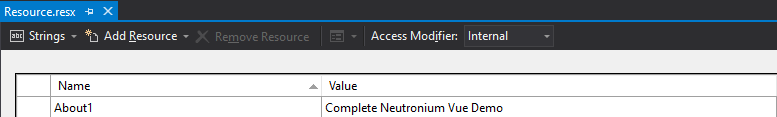
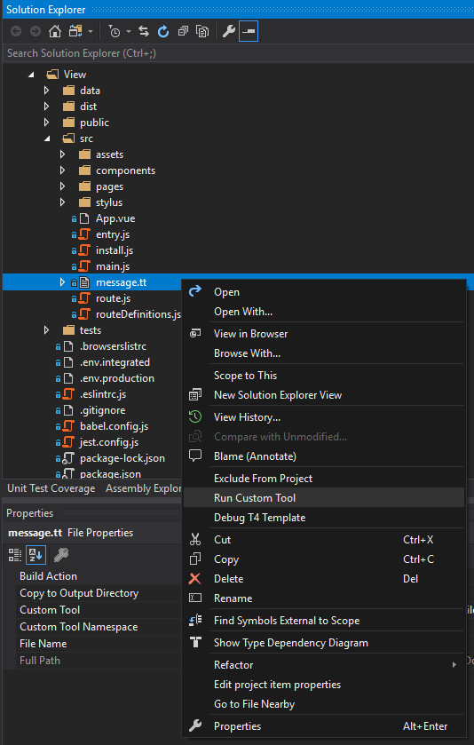

Internalization
Using internalization
vue-i18n is used as a library to internalize messages.
Resource.resx file is used on the C# side and transformed by message.tt into a .json file that is used by vue-i18n as resource.
For example, to reference About1 key defined as below:

Just do:
<v-list-tile-title v-text="$t('Resource.About1')"></v-list-tile-title>
Build
After changing resources, you had to
- Rebuild the solution
- Execute "Run Custom Tool" in order to regenerate
message.json
